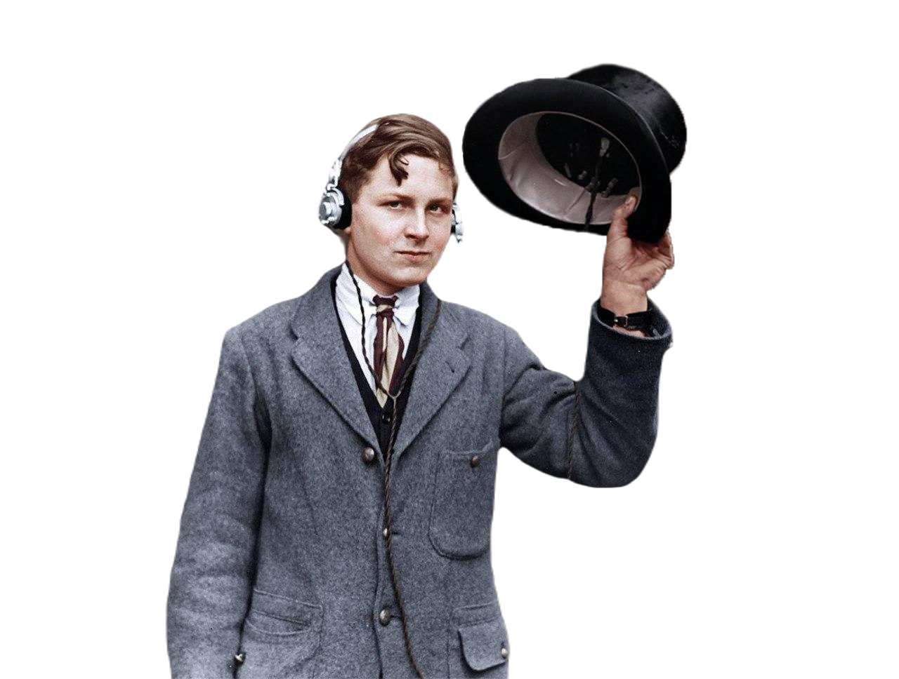

Oleg Yavelov
Actually i'm an editor/content manager, but I like to try different things and study new skills.
I created this page to prove to others that with almost about zero knowledge, you can figure out and do cool stuff.
Let me tell you a little bit about myself
-
👶 1990 i was born
-
🧒 1995 went to preparatory school
-
👦 1997 went to first grade
-
🎸 1998 began studying at music school
-
✨ 2004 first work as a promoter
-
🎓 2007 went to university
-
👨 2008 work as a salesman
-
🧱 2012 first attempts as a content manager
-
👨💻 2014 work in various projects as a content manager
-
📚 2018 increased qualifications and became an editor / content manager
Soft-skills I've been doing for over a decade
- Core
- — Building infrastructures
- — Regulating processes
- — Collecting and processing data
- — Consolidation, systematization and moderation of information
- — Management of electronic document flow
- — Incoming correspondence moderation
- — Parser processing
- — Factchecking
- — Content preparation and publishing
- Non-core
- — html, css, cms
- — premiere, photoshop, figma
- — sublime, terminal
Hobbies & favorites
I like music, movies, video games and cycling.
My little weakness is radio as a phenomenon.
Since about 2004 I've been creating radio projects in one way or another, and since 2011 I've seriously fallen into this hobby.
I'm developing a site about good online radio — project reVoice.
The project analyzes the field of radio production in the CIS and produces annual rankings of the best projects, among non-commercial radio stations, broadcasting on the web. We also do radio production and music collaborations